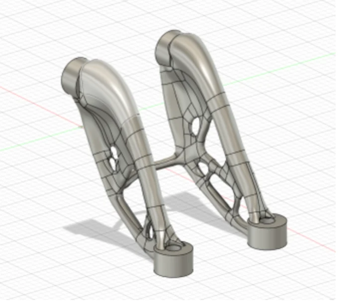
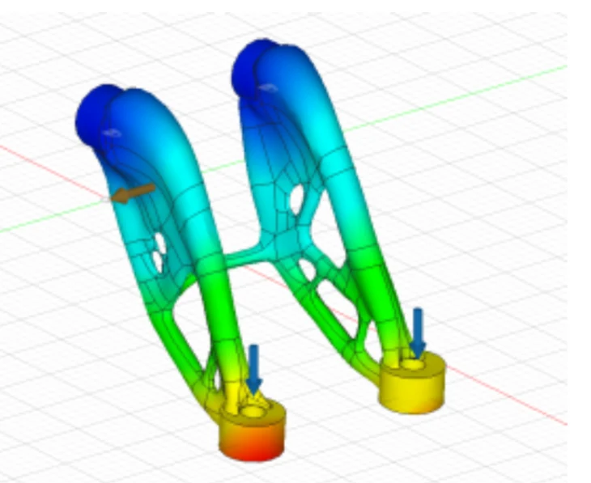
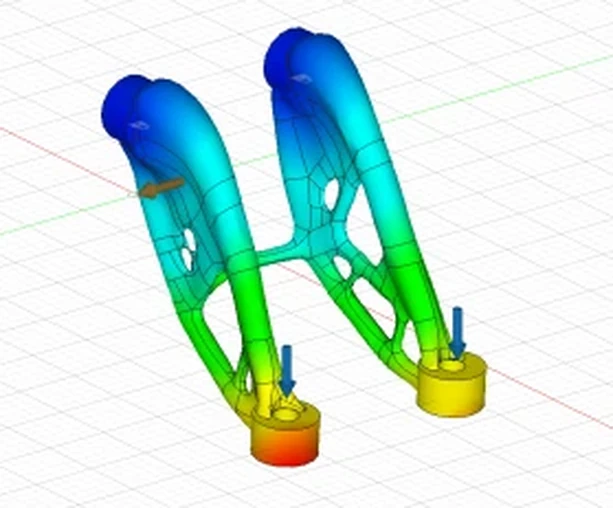
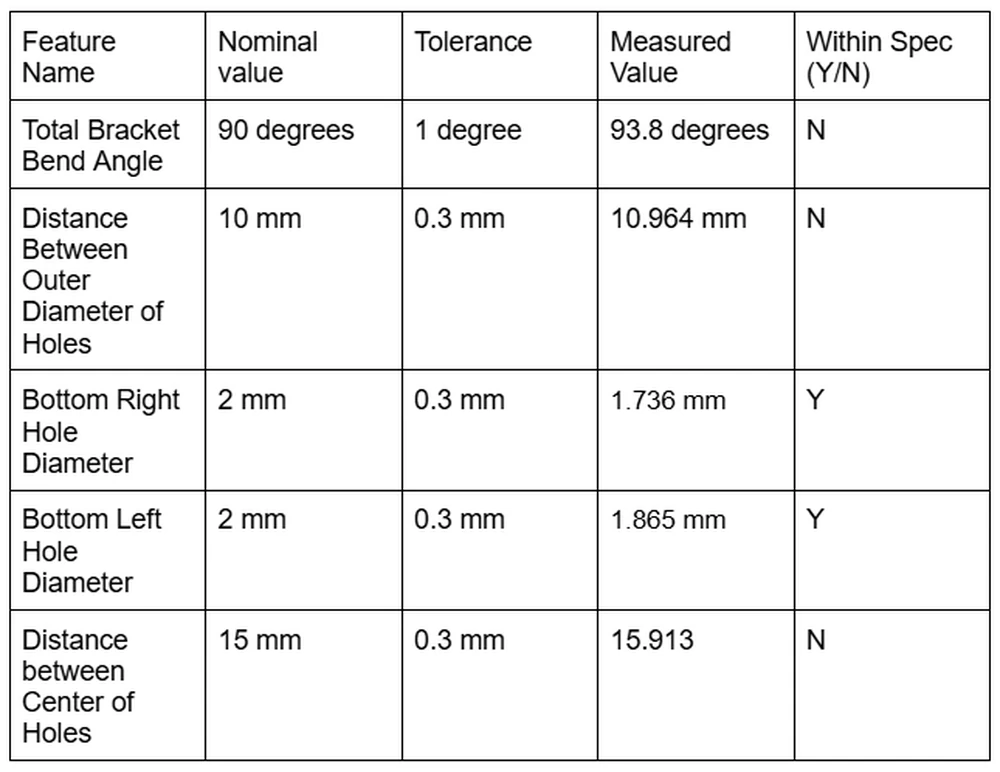

01 / SELECTED
Generative design
72.86% lighter6.984 g modeled mass and 0.019 mm simulated maximum displacement; favorable mass and printability tradeoff.
03 / IME 432 · ADDITIVE MANUFACTURING · WINTER 2025
Evaluating an optimized 316L bracket from design comparison and build-orientation simulation through metal printing, dimensional inspection and post-processing.
The 72.86% result is a CAD mass comparison, not an as-built weighing. Printed part did not meet all dimensional or functional requirements.

We explored how to reduce the mass of a 316L stainless-steel mounting bracket while retaining its prescribed mechanical function and making the geometry practical for metal additive manufacturing.
The initial requirements specified four fastener holes for M2.5 hardware, fixation at one end, and 100 N applied at each loaded edge hole. The team compared lattice, shape-optimized and generative design approaches.
My contributions focused on manufacturing feasibility, build-orientation simulation, dimensional qualification and cost evaluation. The CAD modeling and metal printing were collaborative team activities.
Baseline CAD mass
Selected CAD mass
Mass reduction versus baseline
Reported maximum displacement
Assignment objectives included at least 30% mass reduction and simulated tip deflection below 0.05 mm. The specified material was 316L stainless steel, with mounting-hole locations unchanged and a prescribed loading condition of 100 N at each loaded hole edge.
03 / DESIGN EXPLORATION
We selected the generative concept for its balance of lower mass, material volume and printability—not simply because it had the lowest modeled mass.
6.984 g modeled mass and 0.019 mm simulated maximum displacement; favorable mass and printability tradeoff.

11.984 g modeled mass. The enclosed lattice raised concerns about access for removing unfused powder after printing.

17.931 g modeled mass. Familiar, simpler geometry, but heavier than the other concepts.
04 / CAD & MODEL REVIEW
This newly shared CAD figure shows the generative geometry and a color-coded analysis visualization. It complements the team's reported numerical analysis; the original legend for the new color plot is not available, so no specific result quantity is inferred from its colors.


05 / PRINTABILITY EVALUATION
The team's structural analysis reported a 0.019 mm maximum simulated displacement for the selected concept under the specified load case, below the assignment's 0.05 mm threshold.
I examined support-generation complexity and ran multiple print simulations with different build angles to explore predicted distortion and warpage risk. No single orientation emerged as clearly superior, so this was an exploratory manufacturability assessment—not a proven optimization of build setup.
The lattice concept also raised a practical powder-removal concern: internal surfaces were difficult to access after a powder-bed build.

06 / MANUFACTURING & QUALIFICATION
The team manufactured the selected design in 316L stainless steel using selective laser melting (SLM). After printing, we used a KEYENCE 3D scanner to compare the physical bracket with the intended geometry and checked fastener fit.
Three of five inspected characteristics were outside tolerance. The bracket bend angle measured 93.8° against a 90° ±1° requirement; hole-center spacing measured 15.913 mm against 15 ±0.3 mm. Two holes were measured within the inspection table's 2.0 ±0.3 mm diameter tolerance, but their actual diameters—1.736 and 1.865 mm—did not provide clearance for M2.5 fasteners.
During support removal, performed primarily with wire cutters, the thin central brace warped or deformed. For a future iteration, we proposed thickening this feature and improving the support-removal method. The redesign was proposed but not fabricated or validated.
Our cost exercise also estimated direct material and labor costs, but did not establish a production quote or account for all equipment costs.

07 / LESSONS LEARNED
The modeled bracket was 72.86% lighter, but the physical print failed several dimensional and functional checks. The central brace also proved vulnerable during post-processing.
My work on print-orientation simulations and physical qualification demonstrated why weight reduction must be balanced with support removal, manufacturability and final assembly requirements. A future design would thicken the center brace and improve post-processing.
Collaborative Cal Poly IME 432 project. Design-stage numbers are simulations; dimensional results reflect inspection of the printed part.